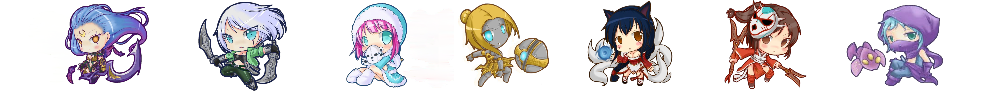

最淺顯的一點就是，後期團戰中，可以利用技能瞬間秒殺對面的一個甚至幾個英雄。類似於，黛安娜，奧利安娜，QWER扔完就得死人這種。
英雄聯盟發展至今，也開始出現很多不一樣的中單。
有支援流（逆命），POKE流（齊勒斯），團控流（枷羅），爆發流（塔龍）等等。
我們要明確隊伍需要什麼樣類型的中單，然後來選擇合適的中單，主要來說，缺什麼補什麼，要是上單選個提摩，打野選個蜘蛛，那麼，可以考慮選個塞恩什麼的也是不錯的
然後就是選擇適合自己的英雄了，練好各種流派的一兩個英雄，並且注意自己都怕哪些英雄
想從低端變成高端嗎? 那你千萬得學會這項功夫，若你有觀察高端玩家他們對線的話就會發現，厲害的人會將兵線控制在塔前卻又不會被塔給吃掉，
這麼一來對方不敢太靠近吃兵而導致經濟落後於你，此時也可以請輔助往前小兇一波，讓對方甚至連經驗都吃不到，趁著這時候拉大差距，利用英雄自身優勢擇機壓制對手。
有時候你會選到一些強勢的推線角，或是為了搶 2 等秀對面一波強推線，這時候都要特別注意對方的打野來關照你，為確保自己的安穩發育，身為中路 Carry 的你必須與隊友多溝通。
請輔助幫忙在河道或草叢多佈點視野方便掌握對方行蹤，也可以請我方打野盡量將河蟹的視野給掌握下來，
想安全的度過前期視野千萬不可少，峽谷中曾流傳著這麼一句話：「能掌握視野的人，才是贏家」。
身為隊伍的核心你必須比其他四人更壯大、裝備更好，因此經濟固然不能少。
因此不能只依賴線上的小兵，也必須觀察一下我方打野的位置拿捏他刷野怪的時候將他的野區資源納入自己口袋，當然只要你時間掌握的好這並不會影響打野的發育，
又或者像上一點所說的，對方如果也懂得控兵線的話你會有一段空窗期吃不到兵，因此這時候的你勢必得刷一波野怪才行。千萬別傻傻的站在線上發呆，很多玩家就是因為這樣在不知不決中經濟就被拉開了。
中路是你的舞台，但是峽谷是你的家，你不要局限於中路一條路，
除了必要的吃線，你和打野沒什麼區別，中單是自由的，也是最好把自身優勢擴大到全隊的位置。
中單位不建議越塔強殺，因為地理位置的關係，很可能被反蹲，除非看到對面所有人都出現在小地圖上，要麼萬萬不能越塔消耗，強殺。
中路對線區短，所以壓線的風險特別大。根據自身狀態做出合理安排，如果對方中單遊走，我們是吃塔皮還是跟著，或者回家補給。不論什麼中單遊走起來都是不錯的，遊走，也是發育的一種。